Made with ♥️ by Emma Bastås.
I started working on this app to help some friends who do really good work that I really respect, and I think that it can be of use to more people.
If you find this app useful, if you have ideas, things that can be better or maybe simply don't work, etc. then please don't hessitate to reach out to me at emma.bastas@protonmail.com. I would love to hear from you.
The app is open-sourced and licensed under the GNU General Public License, meaning that you are free to modify and use the code as you wish as long as you share your improvements. I intend to keep this app free. You can find the code on GitHub github.com/emmabastas/pdf-template. It us built in Typescript, with Parcel and Tailwind. The main technical feature — making PDFs in the browser — is all thanks to Typst, a typesetting system written in Rust and compiled to WebAssembly. Pyotr Kropotkin writes in the conquest of bread
Science and industry, knowledge and application, discovery and practical realization leading to new discoveries, cunning of brain and of hand, toil of mind and muscle — all work together. Each discovery, each advance, each increase in the sum of human riches, owes its being to the physical and mental travail of the past and the present.
This project directly depends on code written by others, and four of these people/projects are looking for funding.
Bellow is the dependency graph of all JavaScript projects that this app depends on (generated with npmgraph.js.org)
By what right then can anyone whatever appropriate the least morsel of this immense whole and say — This is mine, not yours?